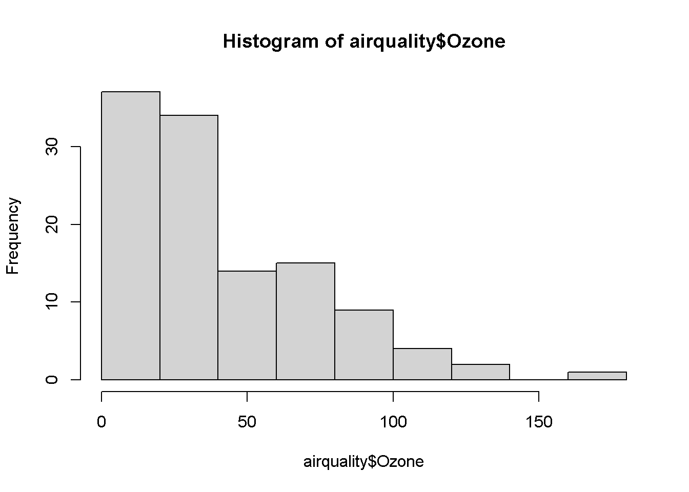
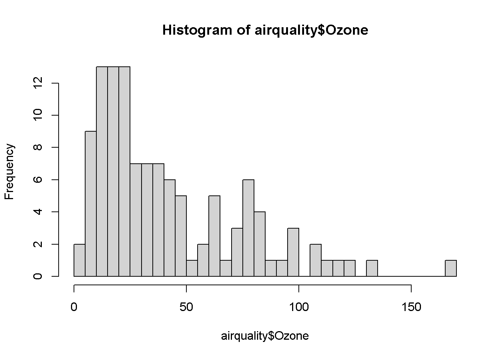
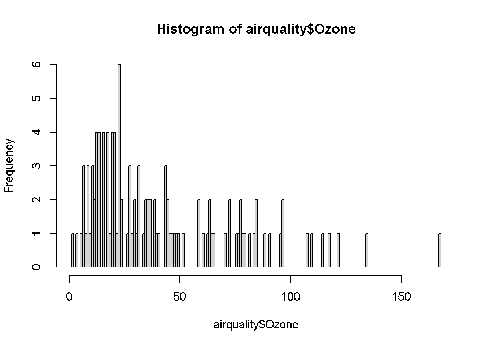

For each question, please make sure you include code output. If the question asks for comparison or further explanation, please make sure to include that as well.
Again we might have some R HTML instead of .Rmd file issues. On the R HTML, it at least looked like on my end that it contained the same content as an .Rmd would, just not the same filetype? I told them that as long as their regular HTML file shows their code (which it should by default), it should be fine because we can always copy and run individual lines. Let me know if you have any issues. I don’t know why it converts to R HTML on their end!
Setting Up
1) Rename this assignment as “Lab 2 Assignment [Last, First].Rmd”
2) Check and set your working directory
getwd()
[1] "C:/Users/jessi/OneDrive - Georgia Institute of Technology/Courses/GTA/PSYC2020L/labs/Lab 2 - Central Tendency"
setwd("path/to/folder")
Error in setwd("path/to/folder"): cannot change working directory
here::here()
[1] "C:/Users/jessi/OneDrive - Georgia Institute of Technology/Courses/GTA/PSYC2020L"
Their instructions from me were to get their working directory and set it IF it wasn’t where they want it to be. So any of (or any combinations of) these three lines are correct. Although this one will have an error in the setwd() and theirs should not.
Basic R Functions
3) Write an R function that takes in two numbers, multiplies them together, and returns the product
If the function would successfully return the product of two numbers, that’s correct (doesn’t have to match mine exactly). Would love if they tested it, but I didn’t explicitly say that so not required.
4) Write an R function that takes in three vectors, puts them in a dataframe, and returns the last two rows of the dataframe.
dataframe_func <-function(vec1, vec2, vec3) {tail(data.frame(vec1, vec2, vec3), n =2)}
If the function would successfully returns the last two rows of the dataframe, that’s correct (doesn’t have to match mine exactly). Would love if they tested it, but I didn’t explicitly say that so not required.
Data Summary
We will be using the airquality dataset for this assignment. Like the iris dataset, this comes preloaded in R. It contains information on daily air quality measurements in New York from May to September 1973.
5) Show me the first five rows of the airquality dataset
6) Obtain the summary() statistics for this dataset
summary(airquality)
Ozone Solar.R Wind Temp
Min. : 1.00 Min. : 7.0 Min. : 1.700 Min. :56.00
1st Qu.: 18.00 1st Qu.:115.8 1st Qu.: 7.400 1st Qu.:72.00
Median : 31.50 Median :205.0 Median : 9.700 Median :79.00
Mean : 42.13 Mean :185.9 Mean : 9.958 Mean :77.88
3rd Qu.: 63.25 3rd Qu.:258.8 3rd Qu.:11.500 3rd Qu.:85.00
Max. :168.00 Max. :334.0 Max. :20.700 Max. :97.00
NA's :37 NA's :7
Month Day
Min. :5.000 Min. : 1.0
1st Qu.:6.000 1st Qu.: 8.0
Median :7.000 Median :16.0
Mean :6.993 Mean :15.8
3rd Qu.:8.000 3rd Qu.:23.0
Max. :9.000 Max. :31.0
7) Ozone Descriptive Statistics
a) What is the mean?
mean(airquality$Ozone, na.rm = T)
[1] 42.12931
b) What is the median?
median(airquality$Ozone, na.rm = T)
[1] 31.5
8) Histograms for Ozone
a) Obtain a histogram with breaks = 10
hist(airquality$Ozone, breaks =10)

b) Obtain a histogram with breaks = 50
hist(airquality$Ozone, breaks =50)

c) Obtain a histogram with breaks = 200
hist(airquality$Ozone, breaks =200)

d) Compare three histograms above and describe the differences
The histograms with more breaks show the data with more details, but it can be harder to see the trends in the histograms with lots of breaks.
Something along this line works; doesn’t have to be exactly that. Feel free to be lenient as long as makes sense to you.
9) Boxplot for Ozone
MISTAKE QUESTION! I had thought boxplots would be covered this week but took them out from the slides when I saw Dingjing‚Äôs lecture slides. Forgot to take them out of this üôÉ. This question is dropped.
a) Obtain a boxplot for Ozone
b) Is the data symmetrical? (Yes / No) How can you tell?
c) Is the data skewed? (Yes / No) How can you tell?
10) Descriptive statistics for Temp
a) What is the mean?
mean(airquality$Temp)
[1] 77.88235
b) What is the median?
median(airquality$Temp)
[1] 79
11) Histogram for Temp
a) Obtain a histogram with default number of breaks.
hist(airquality$Temp)
12) Comparison between Ozone and Temp…
Bad phrasing on these two. All they have to do is say they’re different. They don’t have to include R code.
a) Does the mean change?
mean(airquality$Ozone, na.rm = T)
[1] 42.12931
mean(airquality$Temp)
[1] 77.88235
Yes, the mean is different.
b) Does the median change?
median(airquality$Ozone, na.rm = T)
[1] 31.5
median(airquality$Temp)
[1] 79
Yes, the median is different.
13) Mode for Wind
a) What is the mode for the Wind variable? How many times did it occur?
sort(table(airquality$Wind), decreasing = T)[1]
11.5
15
The mode is 11.5. It occurred 15 times.
Correct answer is the important part here; they can use whatever R code solution to solve it (I gave a couple options).